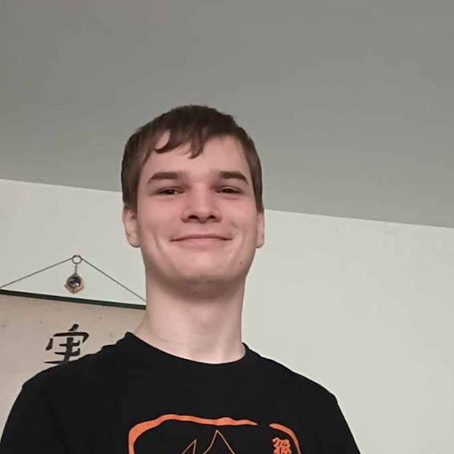

Julian van der leek
|  | Ik ben Julian, mijn hobby's zijn gamen, schrijven en geschiedenis. Ik doe nu de opleiding software development en zou graag game development willen doen. Ik woon in Cruquius en ik ben geboren in Haarlem. Ik heb hiervoor op de Mavo gezeten. |
Woonplaats
| Ik woon in Cruquius. Cruquius ligt tussen Hoofddorp en Haarlem in. Er is op zich niet heel erg veel daar. We hebben een gemaal waarmee we geholpen hebben het Haarlemmermeer leeg te halen. |  |
In mijn Vrije tijd
|
In mijn vrije tijd doe ik vooral aan gamen.
Ik speel allerlei soorten spellen,
ik vind vooral spellen met een goed verhaal leuk,
maar ik vind alles prima zolang het maar leuk is om te spelen.
Ik speel ook graag met vrienden. Naast gamen vind ik schrijven ook heel erg leuk. Ik heb veel verschillende soorten verhalen geschreven en ook een heel verhaallijn voor mijn eigen minecraft server. Ik heb ook een heel verhaal geschreven voor een eigen spel dat ik heb gemaakt in rpg maker. Ik vind geschiedenis ook leuk en dan vooral wat modernere geschiedenis of Japanse geschiedenis. Ik vind het fascinerend om over de verhalen van toen te leren, vooral in andere culturen waar alles helemaal anders werkt. |
 |
Wat kan ik al
 |
Ik ben super goed in Engels, ik stond daar boven een 9 gemiddeld voor op de middelbare school. Ik ben ook Japans aan het leren, alleen ben ik daar nog niet even goed in. Ik heb een eigen website met mijn eigen game er op staan. Ik ben goed in het bedenken van verhalen. |
Mijn top 10 games
1 Persona 5 Royal
2 Like a dragon: Infinite wealth
3 The great ace Attorney
4 Ghost of Tsushima
5 Judgement
6 Yakuza 0
7 Detroit become human
8 Yakuza: Like a dragon
9 Final fantasy 15
10 Red dead redemption 2